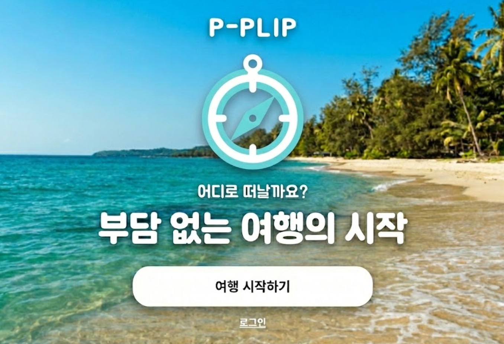
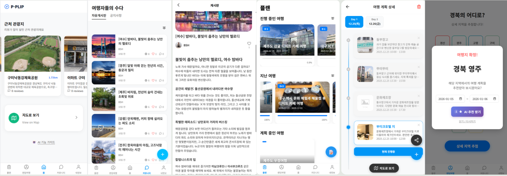
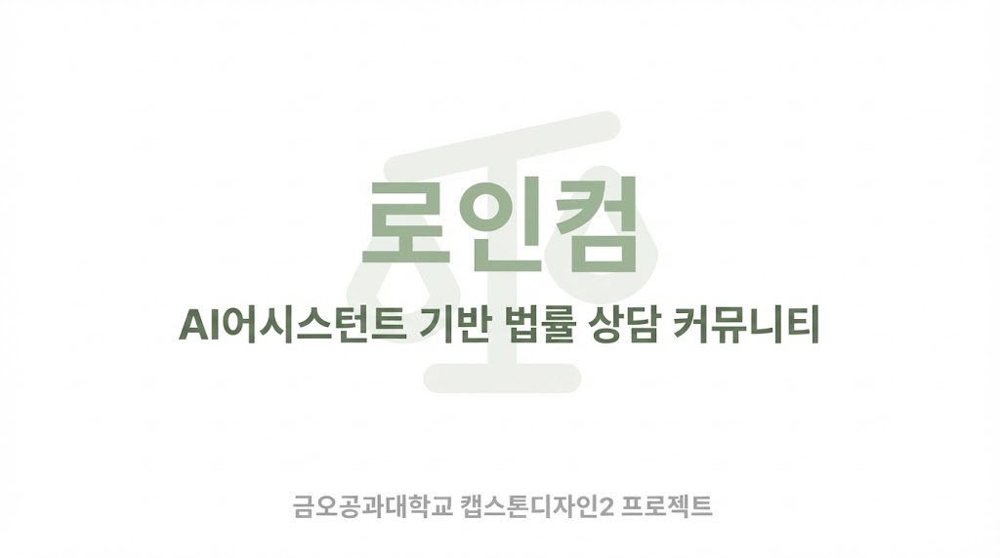
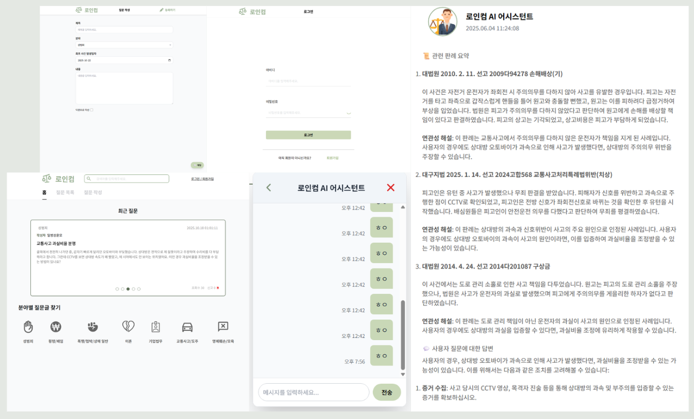

성민제 MinJe Seong
“꾸준한 배움을 통해 소통하며 성장하는 개발자 성민제입니다.”
Birth | 2000년 2월 21일
E-Mail | mj022111@gmail.com
Github | github.com/smj1513
Hugging Face | https://huggingface.co/kakao1513
지원분야 | AI 서비스 개발
👋 About me
개발은 혼자만의 여정이 아니라, 동료와 함께 성장하는 과정이기도 합니다. 그렇기에, 저는 기술적 성장만큼이나 소통과 나눔의 가치를 중요하게
생각합니다.
세미나와 멘토 활동을 통해 지식을 나누고 함께 문제를 해결하는 기쁨을 경험하며 늘 저의 지식을 타인에게 전달하고자 노력해왔습니다.
그렇게 배움의 과정 속에서 동료와 소통하며 함께 성장하는 과정을 즐기고 있습니다.
매일 마주하는 새로운 배움을 거름 삼아, 어제보다 성장한 오늘의 제가 팀과 동료들에게 긍정적인 영향을 주는 사람으로 기억되기를 바랍니다.
🔨 Skills and Tools
Language
Java, Python
Backend
Spring Boot, Spring Security, MyBatis, Spring Data JPA, JWT, WebSocket,
STOMP, JUnit, FastAPI
AI
Langgraph, Langchain, Pytorch, SentenceTransformers, RAGAS
RDBMS
MySQL, PostgreSQL
NoSQL, Vector DB
Redis, FAISS, Qdrant
Devops
AWS, Git, Docker, Nginx, Github Actions
📝 Projects
P-PliP - P 성향 여행자를 위한 즉흥 여행 도우미 2025.11.01 ~ 2025.12.26

📦 프로젝트 상세
역할
백엔드 개발, 추천 엔진 개발
주요성과
추천 엔진 성능 20% 개선, LangGraph 파이프라인 구축
사용기술
Java, Spring Boot, Vue.js, FastAPI, LangChain, LangGraph,
Qdrant, RAGAS, Splade, Redis
"계획 세우기는 귀찮지만, 효율적인 여행은 하고 싶은 P 성향 여행자를 위한 즉흥 여행 도우미"
[실제 사용자 화면]
📖 내용
- MBTI P성향(인식형) 여행자들은 크게 계획에 얽매이는 것을 싫어하는 유형과, 계획을 세우는 것이 힘들거나 어려워서 싫어하는 유형 두 가지가 존재
- 이러한 P성향 여행자들은 장소를 체계적으로 찾거나 계획을 세우는 것이 어렵거나 귀찮아서 여행을 떠나는 것이 쉽지 않음
- 사용자가 즉흥적으로 현재 원하는 장소를 추상적인 문장으로 입력시 주변 관광지 중 가장 적합한 장소를 찾아서 추천
- 이후 추천 받은 장소 혹은 마음에 드는 장소 중 한 곳을 골라 그 주변으로 여행 계획을 자동으로 생성하는 기능 제공
- 자신의 여행 경험을 공유할 수 있는 커뮤니티 기능과 여행지 리뷰 기능을 제공
🙋♂️ 역할 및 기여 (Technical Contributions)
- LLM as Judge 추천 품질 평가 지표(Metric) 수립
- 기존 추천 성능 지표(NDCG 등)의 한계를 극복하기 위해 'Category Alignment'와 'Vibe Relevance' 커스텀 메트릭 설계
- RAGAS 프레임워크를 활용하여 추천 결과의 정성적 일치도를 자동 평가하는 워크플로우 구축
- 지표 설계후 개선 과정을 통해 HyDE(Hypothetical Document Embedding) 검색 기능 도입을 통해 추천 성능 20%향상
- LangGraph 상태 관리 및 분기 처리 구현
- 검색 실패 시 재시도(Loop), 조건부 숙소 검색(Conditional Edge)등 흐름 제어 구현
- LangGraph를 활용하여 복잡한 흐름 제어를 위한 상태 관리 및 분기 처리 구현
- Spring Security + JWT 기반 인증 시스템 구현
- 사용자 인증을 위한 JWT 토큰 생성 및 관리
- 사용자 권한 관리 및 인증된 사용자만의 정보를 조회할 수 있도록 권한 관리 구현
- 추론 서버 부하 감소를 위한 Cache 기반 락(Lock) 구현
- Caffeine 캐시를 락(Lock)으로 활용하여 시간이 오래 걸리는 AI 추론 요청에 대한 중복 호출 방지 및 동시성 제어
- 도메인별(관광지 추천, 여행 계획 등)로 락의 생명주기(TTL)와 키 전략을 독립적으로 관리
- 안정적인 락 해제 전략: AI서버 요청 과정에서 발생 예외를 Custom AIServerErrorException으로 래핑 및 예외 발생 시 @ExceptionHandler를 통해 락을 즉시 해제하여, 요청 실패가 데드락(Deadlock)으로 이어지지 않도록 예외 처리 강화
- 확장성과 유지보수성을 고려한 범용 파일 서비스 아키텍처 설계
- 팩토리 메서드 패턴을 적용하여 객체 생성 책임을 분리, 일관된 메타데이터 관리 구현
- 전략 패턴을 활용하여 이미지 유형에 따라 적절한 데이터 접근 객체(DAO)를 런타임에 동적으로 선택하도록 구현하여 역할 분리
- 배치 처리를 도입하여 다중 파일 업로드 및 메타데이터 일괄 업데이트 시 DB 커넥션 비용 최소화 및 성능 최적화
🤔 고민 및 구현 (Challenges & Solutions)
- 정답이 없는 Open Domain 검색의 성능 평가 문제
- 기존 검색 지표(NDCG)는 정답이 명확한 태스크에 적합하나, "분위기 좋은 카페" 같은 추상적 질의 평가에는 한계가 있음을 확인
- 해결: LLM as Judge (RAGAS) 방법론을 도입, '카테고리 일치성'과 '분위기 적합성'이라는 커스텀 지표를 설계하여 사람의 개입 없는 자동화된 정성 평가 파이프라인 구축 (0.66 → 0.79 성능 향상)
- Vector Store(Qdrant)와 LangChain 간의 메타데이터 호환성 이슈
- LangChain의 QdrantVectorStore가 중첩된 Payload 데이터를 Document 객체의 metadata로 온전히 매핑하지 못하는 문제 발생
- 해결: 라이브러리 내부 로직을 분석하여 'CustomQdrantVectorStore'를 구현하고 '_document_from_point' 메서드를 오버라이딩함으로써 데이터 마이그레이션 없이 호환성 문제 해결
- LLM 환각 제어 및 워크플로우 관리
- 단순 Chain 방식은 예외 상황 대처가 어렵고 단방향 흐름만 가능하여 복합적인 여행 계획 생성에 부적합
- 해결: LangGraph를 도입하여 검색 품질이 낮을 경우 쿼리를 수정하여 재검색하거나, 조건에 따라 단계를 건너뛰는 Self-RAG 시스템 구현
- Sparse Embedding 모델의 속도 최적화
- 성능이 우수한 Splade 모델은 인덱싱 속도가 느려 실시간 서비스에 부담
- 해결: 인덱싱은 GPU 배치 작업으로 미리 수행하고, 실시간 서빙은 CPU에서 수행하도록 파이프라인을 이원화하여 운영 효율성 확보
📝 Projects
law-in-comm - AI 어시스턴트 기반 법률 상담 커뮤니티 플랫폼 2025.02 ~ 2025.06

📦 프로젝트 상세
역할
백엔드 개발, 인프라 구축, AI 모델링
주요성과
법률 특화 임베딩 모델 개발(NDCG 7.2% 향상)
모델 Huggingface 누적 다운로드 수 1684회(2026.01.15 기준)
모델 Huggingface 누적 다운로드 수 1684회(2026.01.15 기준)
사용기술
Java, Spring Boot, PostgreSQL, Redis, WebSocket, AWS S3,
Docker, GitHub Actions, FastAPI
"AI와 법률 전문가를 연결하여 법률 서비스의 문턱을 낮추는 지능형 법률 상담 플랫폼"
[실제 사용자 화면]
📖 내용
- RAG 기반 법률 상담: AI가 판례 기반으로 1차 답변을 제공하여 빠른 궁금증 해소
- 전문가 1:1 상담: WebSocket 기반 실시간 채팅으로 변호사와 심도 있는 상담 가능
- 커뮤니티 기능: 질문/답변 게시판을 통해 다른 사용자 및 전문가와 지식 공유
- 안정적인 시스템: Spring Boot 기반의 견고한 서버 및 Docker/GitHub Actions를 통한 CI/CD 구축
🙋♂️ 역할 및 기여 (Technical Contributions)
- 법률 데이터셋 구축 및 임베딩 모델 파인튜닝
- 일반 모델의 한계를 극복하기 위해 법률 도메인 특화 데이터셋 구축 및 Fine-tuning 수행
- Contrastive Learning 적용으로 Base Model 대비 NDCG@5 Score 7.2% 향상
- RAG 파이프라인의 검색 정확도를 높여 신뢰성 있는 법률 정보 제공 기반 마련

- DDD 기반 아키텍처 설계
- 전략(Strategy) 및 팩토리(Factory) 패턴을 적용하여 파일 저장소 및 처리 로직의 확장성 확보
- JPA 상속 클래스(JOINED) 전략을 사용하여 사용자(일반/변호사) 계층 구조를 효율적으로 모델링
- 템플릿 메서드 패턴으로 사용자 유형별 공통 로직과 고유 행위를 깔끔하게 분리
- 인터셉터를 활용한 WebSocket 세션 인증관리
- STOMP 프로토콜 연결(CONNECT) 단계에서 `ChannelInterceptor`를 활용하여 JWT 토큰 유효성 검증
- 메시지 브로커 앞단에서 비인가 접근을 차단하여 실시간 채팅 서비스의 보안성 강화
- 안정적인 인프라 구축
- Docker 컨테이너를 활용하여 개발 및 배포 환경의 일관성 보장
- GitHub Actions 기반 CI/CD 파이프라인 구축으로 배포 자동화 및 생산성 증대
- AWS S3를 연동하여 이미지 등 대용량 정적 파일의 안정적인 저장 및 서빙
🤔 고민 및 구현 (Challenges & Solutions)
- 임베딩 모델 학습 시 배치 사이즈 한계 극복 (Gradient Caching)
- 대조 학습(Contrastive Learning)은 Negative Sampling을 위해 큰 배치 사이즈가 중요하나, 단일 GPU(24GB) 환경의 메모리 제약 발생
- 해결: Gradient Caching을 적용하여 하드웨어 제약을 극복하고 논리적 배치 사이즈를 512까지 확대, 성공적인 학습 및 성능 향상 성공
- 법률 용어의 특수성과 검색 정확도 문제
- 일반적인 임베딩 모델은 법률 용어의 미묘한 차이를 구분하지 못해 검색 품질이 낮음
- 해결: AI Hub의 법률 QA 데이터셋을 활용하여 도메인 적응 학습(Fine-tuning)을 수행, 법률 문맥 이해도 향상
- 사용자 유형별 데이터 모델링의 복잡성
- 일반 사용자와 변호사는 공통점도 있지만 서로 다른 속성과 권한을 가짐
- 해결: DB 차원에서는 1:1 관계의 테이블로 분리하고, 객체 차원에서는 상속 관계를 매핑하여 데이터 무결성과 코드 재사용성 확보